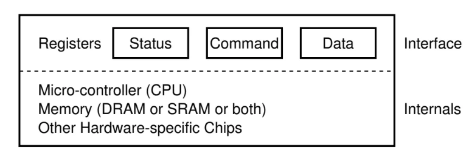
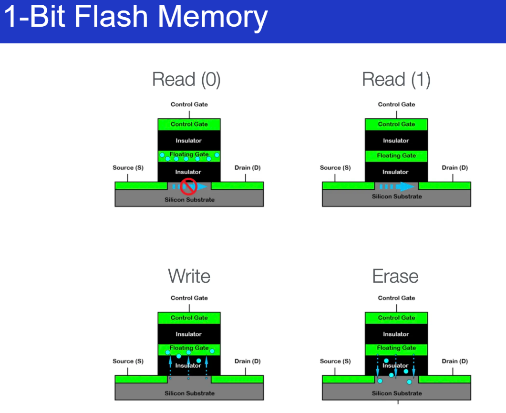
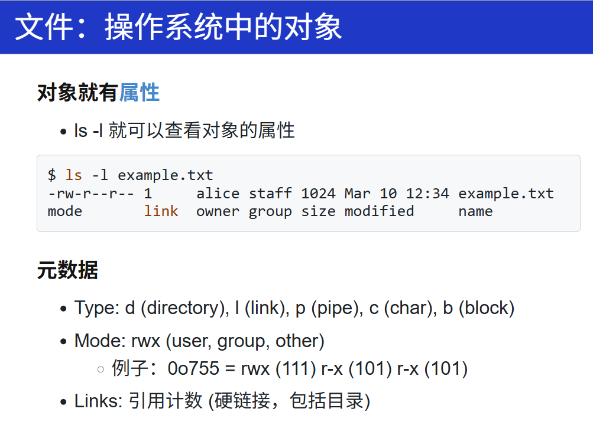
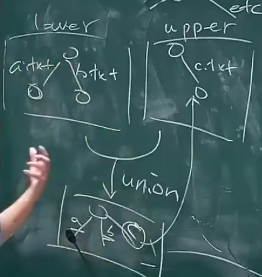

Persistence
device
插个优盘试试发生什么……
- 优盘的文件系统会自动 “出现”
-
但你是专业人士
- 看看 /dev/ 是不是发生了一些什么变化
-
水面下的冰山：
-
/dev/ 下的对象不会凭空创建
- udev - /lib/udev/rules.d
- udisks2 - 这才是真正执行 mount 的程序
看到这些内容，就会想想，实际公司会怎么做的？
什么是 IO设备？
-
I/O 设备 = 一个能与 CPU 交换数据的接口/控制
- 就是 “几组约定好功能的线” (寄存器)
- 通过握手信号从线上读出/写入数据
- 给寄存器 “赋予” 一个内存地址 (Address Decoder)
- CPU 可以直接使用指令 (in/out/MMIO) 和设备交换数据
- 是的，就这么简单

- 就是 “几组约定好功能的线” (寄存器)
学 PCIe 总线之前，来回一下总线是个啥。
为了接更多的 I/O 设备，所以有了一个非常特殊的设备：总线。
进一步作用：总线：提供设备的 “虚拟化”：注册和转发
- 把收到的地址 (总线地址) 和数据转发到相应的设备上
- 例子: port I/O 的端口就是总线上的地址
- IBM PC 的 CPU 其实只看到这一个 I/O 设备
总线这一个 I/O 设备预留了很多 I/O 设备（寄存器），等待设备插入。
设备和和总线之间是有协议的，设备插入之后，就会告诉总线（控制器），它的厂商、设备号等等信息。当所有设备初始化完毕后，CPU就能看到这些设备。（现在的USB天生支持热插拔）
今天获得 “CPU 直连” 的标准设备：总线
- 接口
- 75W 供电
- 所以我们需要 6-pin, 8-pin 的额外供电
- 数据传输
- PCIe 6.0 x16 带宽达到 128GB/s
- 于是我们有了 800Gbps 的网卡
- 总线自带 DMA (专门执行 memcpy 的处理器)
- 中断管理
- 将设备中断转发到操作系统MSI (Message-signaled Interrupts)
PCIe 总线：支撑了现代 I/O 设备的体系
- 高速设备都是直插 PCIe 的
- FPGA
- 显卡
- 网卡
- ……
- USB Bridge
Prompt: NVMe 是如何接入 PCIe 总线的？
NVMe（Non-Volatile Memory Express）是一种为高速存储器（如SSD）设计的主机控制器接口协议。它直接通过PCIe（Peripheral Component Interconnect Express）总线与主板相连，绕过传统的SATA或SAS通道，大幅提升数据传输速率和并发处理能力。
详细描述如下：
- 物理层面：NVMe设备通常为M.2、U.2或PCIe扩展卡形态，插入主板相应的PCIe插槽。这样，存储器与CPU之间建立起物理连接，使用PCIe通道（如x2、x4、x8）。
- 链路层与传输层：NVMe利用PCIe的高速点对点通道，支持多条并行通路，实现大带宽、低延迟的数据传输。NVMe协议使SSD能充分利用PCIe 3.0、4.0或更高版本的带宽。
- 协议层面：主机操作系统通过NVMe驱动，与SSD上的NVMe控制器通信。PCIe作为物理和数据链路的载体, NVMe作为协议负责命令、队列管理和数据传输。
- 并发处理：NVMe支持多队列（主机和控制器可各自支持多至64K队列，每队列64K命令），显著提升并发和效率，这是基于PCIe总线的多通道特性实现的。
总结：NVMe设备直接插接在PCIe总线上，利用PCIe的高速通道和NVMe协议实现高效的数据交互，显著提升SSD的性能。
storage
1-Bit 到 1TB
知道了这个1 bit的 NAND flash：

1-Bit NAND Flash是一种非易失性存储器，每个存储单元只能存储1位二进制数据（0或1），属于SLC（Single-Level Cell）存储。其核心结构为浮栅晶体管（Floating Gate Transistor），存储单元通过是否存有电子来表示数据状态。
其工作原理如下：
- 存储结构：NAND Flash由许多浮栅晶体管串联组成“字线”和“位线”；每个晶体管对应一个存储单元，仅存储1 bit。
- 编程（写入）：通过在控制门和源漏极施加一定电压，实现电子通过隧穿效应注入浮栅。当浮栅内有电子时，单元状态为“0”；无电子为“1”。
- 擦除：通过反向电压，使浮栅电子释放。擦除操作以“块”为单位进行。
- 读取：给控制门施加适当电压，根据浮栅是否有电子，当前存储单元的导通情况（阈值电压高为“0”，低为“1”）即可判断数据。
- 特点：SLC NAND Flash速度快、寿命长、可靠性高，适用高端存储领域。
总结，1-Bit NAND Flash通过控制浮栅晶体管中电子的有无，实现数据的写入、读取与擦除。
但是为什么会有这个块设备？成本！
思想：资源紧凑的解决方案，把数据紧凑地压缩在一起，用节约的电路！
从 1-Bit 到 1TB
实现 “寻址能力” 的代价
磁盘：位置划分 + 扇区头
电路：行 (字线) 和列 (位线) 选通信号
这些都会消耗额外的资源 (面积)
解决方法：按块访问
“一块” 可以共享 metadata
- 物理分割、Erase 信号、纠错码……
- 磁盘是
struct block disk[NUM_BLOCKS]- Block 是读/写的最小单位
- “Block devices” (ls -l /dev/sd*)
Block Devices
首先，block devices 也可以是普通的文件：
- “字节序列” 抽象
- 可以直接 mmap 到进程的地址空间
但有了上面的硬件经验，这应该不是一个好的抽象，但这也是直白/透明抽象的代价：
-
不经意间的读/写放大 (read/write amplifications)
读写数据时，在更底层的系统上，产生的数据量会超过上层的。
-
存储设备在实际执行读写操作时，处理的数据量超过用户实际请求的数据量
- 随机读/写一个 byte，都会导致大量数据传输
- 文件系统的实现应该能够感知 “块” 的概念
Linux Bio
Request/response 接口
- 上层 (进程、文件系统……) 可以任意提交请求
- 下层 (Bio + Driver) 负责调度
- “Multi-queue block I/O queuing”
- 核心数据结构
- I/O 请求：struct request
- struct bio
- struct bvec_iter
- 真正起作用的：真正的 I/O vector: sector_t 的 “扇区号”
- 每次请求一个 request，不单单能读一个块，实际可以一个vector，很多块
- (现在 vibe coding 真的好简单)
依旧阅读： Coding for SSDs
文件系统 API
目录树
比如要删掉一个目录，但是 os 究竟做了什么，提供了什么机制？
mkdir hello
strace rm hello 2>&1 | vim -
execve("/usr/bin/rm", ["rm", "hello"], 0x7ffec21c2708 /* 67 vars */) = 0
brk(NULL) = 0x5d4d64d55000
arch_prctl(0x3001 /* ARCH_??? */, 0x7fff90f58a90) = -1 EINVAL (Invalid argument)
mmap(NULL, 8192, PROT_READ|PROT_WRITE, MAP_PRIVATE|MAP_ANONYMOUS, -1, 0) = 0x7b15993fc000
access("/etc/ld.so.preload", R_OK) = -1 ENOENT (No such file or directory)
openat(AT_FDCWD, "/etc/ld.so.cache", O_RDONLY|O_CLOEXEC) = 3
newfstatat(3, "", {st_mode=S_IFREG|0644, st_size=73171, ...}, AT_EMPTY_PATH) = 0
mmap(NULL, 73171, PROT_READ, MAP_PRIVATE, 3, 0) = 0x7b15993ea000
close(3) = 0
openat(AT_FDCWD, "/lib/x86_64-linux-gnu/libc.so.6", O_RDONLY|O_CLOEXEC) = 3
read(3, "\177ELF\2\1\1\3\0\0\0\0\0\0\0\0\3\0>\0\1\0\0\0P\237\2\0\0\0\0\0"..., 832) = 832
pread64(3, "\6\0\0\0\4\0\0\0@\0\0\0\0\0\0\0@\0\0\0\0\0\0\0@\0\0\0\0\0\0\0"..., 784, 64) = 784
pread64(3, "\4\0\0\0 \0\0\0\5\0\0\0GNU\0\2\0\0\300\4\0\0\0\3\0\0\0\0\0\0\0"..., 48, 848) = 48
pread64(3, "\4\0\0\0\24\0\0\0\3\0\0\0GNU\0\315A\vq\17\17\tLh2\355\331Y1\0m"..., 68, 896) = 68
newfstatat(3, "", {st_mode=S_IFREG|0755, st_size=2220400, ...}, AT_EMPTY_PATH) = 0
pread64(3, "\6\0\0\0\4\0\0\0@\0\0\0\0\0\0\0@\0\0\0\0\0\0\0@\0\0\0\0\0\0\0"..., 784, 64) = 784
mmap(NULL, 2264656, PROT_READ, MAP_PRIVATE|MAP_DENYWRITE, 3, 0) = 0x7b1599000000
mprotect(0x7b1599028000, 2023424, PROT_NONE) = 0
mmap(0x7b1599028000, 1658880, PROT_READ|PROT_EXEC, MAP_PRIVATE|MAP_FIXED|MAP_DENYWRITE, 3, 0x28000) = 0x7b1599028000
mmap(0x7b15991bd000, 360448, PROT_READ, MAP_PRIVATE|MAP_FIXED|MAP_DENYWRITE, 3, 0x1bd000) = 0x7b15991bd000
mmap(0x7b1599216000, 24576, PROT_READ|PROT_WRITE, MAP_PRIVATE|MAP_FIXED|MAP_DENYWRITE, 3, 0x215000) = 0x7b1599216000
mmap(0x7b159921c000, 52816, PROT_READ|PROT_WRITE, MAP_PRIVATE|MAP_FIXED|MAP_ANONYMOUS, -1, 0) = 0x7b159921c000
close(3) = 0
mmap(NULL, 12288, PROT_READ|PROT_WRITE, MAP_PRIVATE|MAP_ANONYMOUS, -1, 0) = 0x7b15993e7000
arch_prctl(ARCH_SET_FS, 0x7b15993e7740) = 0
set_tid_address(0x7b15993e7a10) = 3145
set_robust_list(0x7b15993e7a20, 24) = 0
rseq(0x7b15993e80e0, 0x20, 0, 0x53053053) = 0
mprotect(0x7b1599216000, 16384, PROT_READ) = 0
mprotect(0x5d4d3b630000, 4096, PROT_READ) = 0
mprotect(0x7b1599436000, 8192, PROT_READ) = 0
prlimit64(0, RLIMIT_STACK, NULL, {rlim_cur=8192*1024, rlim_max=RLIM64_INFINITY}) = 0
munmap(0x7b15993ea000, 73171) = 0
getrandom("\x03\xe2\x17\x8b\x1f\x3f\x00\x5c", 8, GRND_NONBLOCK) = 8
brk(NULL) = 0x5d4d64d55000
brk(0x5d4d64d76000) = 0x5d4d64d76000
openat(AT_FDCWD, "/usr/lib/locale/locale-archive", O_RDONLY|O_CLOEXEC) = 3
newfstatat(3, "", {st_mode=S_IFREG|0644, st_size=8876560, ...}, AT_EMPTY_PATH) = 0
mmap(NULL, 8876560, PROT_READ, MAP_PRIVATE, 3, 0) = 0x7b1598600000
close(3) = 0
ioctl(0, TCGETS, {B38400 opost isig icanon echo ...}) = 0
newfstatat(AT_FDCWD, "hello", {st_mode=S_IFDIR|0775, st_size=4096, ...}, AT_SYMLINK_NOFOLLOW) = 0
openat(AT_FDCWD, "/usr/share/locale/locale.alias", O_RDONLY|O_CLOEXEC) = 3
newfstatat(3, "", {st_mode=S_IFREG|0644, st_size=2996, ...}, AT_EMPTY_PATH) = 0
read(3, "# Locale name alias data base.\n#"..., 4096) = 2996
read(3, "", 4096) = 0
close(3) = 0
openat(AT_FDCWD, "/usr/share/locale/en_US/LC_MESSAGES/coreutils.mo", O_RDONLY) = -1 ENOENT (No such file or directory)
openat(AT_FDCWD, "/usr/share/locale/en/LC_MESSAGES/coreutils.mo", O_RDONLY) = -1 ENOENT (No such file or directory)
openat(AT_FDCWD, "/usr/share/locale-langpack/en_US/LC_MESSAGES/coreutils.mo", O_RDONLY) = -1 ENOENT (No such file or directory)
openat(AT_FDCWD, "/usr/share/locale-langpack/en/LC_MESSAGES/coreutils.mo", O_RDONLY) = 3
newfstatat(3, "", {st_mode=S_IFREG|0644, st_size=613, ...}, AT_EMPTY_PATH) = 0
mmap(NULL, 613, PROT_READ, MAP_PRIVATE, 3, 0) = 0x7b1599435000
close(3) = 0
write(2, "rm: ", 4rm: ) = 4
write(2, "cannot remove 'hello'", 21cannot remove 'hello') = 21
openat(AT_FDCWD, "/usr/share/locale/en_US/LC_MESSAGES/libc.mo", O_RDONLY) = -1 ENOENT (No such file or directory)
openat(AT_FDCWD, "/usr/share/locale/en/LC_MESSAGES/libc.mo", O_RDONLY) = -1 ENOENT (No such file or directory)
openat(AT_FDCWD, "/usr/share/locale-langpack/en_US/LC_MESSAGES/libc.mo", O_RDONLY) = -1 ENOENT (No such file or directory)
openat(AT_FDCWD, "/usr/share/locale-langpack/en/LC_MESSAGES/libc.mo", O_RDONLY) = -1 ENOENT (No such file or directory)
write(2, ": Is a directory", 16: Is a directory) = 16
write(2, "\n", 1
) = 1
lseek(0, 0, SEEK_CUR) = -1 ESPIPE (Illegal seek)
close(0) = 0
close(1) = 0
close(2) = 0
exit_group(1) = ?
+++ exited with 1 +++
rm 命令不单单是一个系统调用的文件，而会做更多的事情：
检查要删除的每一个文件，是不是有权限（fstat）等等。
最后我们都知道是删不掉的，要打印出一句话：
rm: cannot remove 'hello/': Is a directory
但输出之前还做了很多事情：
错误信息的本地化（找到系统设置的语言：LC）等等，都可以问问 LLM。
实际上 API 本身很简单，但系统提供了很多机制，比如：globbing pattern glob (programming) - Wikipedia
bash -c 'echo /etc/**/*'
用 strace 看看。
但是这玩意是怎么实现的？回想起 pstree 中实现的遍历的这么些个目录。
所以，globbing 实际上也就是自己在 pstree 中做的那样，打开目录，getdents64...
openat(AT_FDCWD, "/etc/", O_RDONLY|O_NONBLOCK|O_CLOEXEC|O_DIRECTORY) = 3
newfstatat(3, "", {st_mode=S_IFDIR|0755, st_size=12288, ...}, AT_EMPTY_PATH) = 0
getdents64(3, 0x6074b7cbf270 /* 235 entries */, 32768) = 7552
getdents64(3, 0x6074b7cbf270 /* 0 entries */, 32768) = 0
close(3) = 0
openat(AT_FDCWD, "/etc/udev", O_RDONLY|O_NONBLOCK|O_CLOEXEC|O_DIRECTORY) = 3
newfstatat(3, "", {st_mode=S_IFDIR|0755, st_size=4096, ...}, AT_EMPTY_PATH) = 0
brk(0x6074b7cf1000) = 0x6074b7cf1000
getdents64(3, 0x6074b7cc8fa0 /* 5 entries */, 32768) = 144
getdents64(3, 0x6074b7cc8fa0 /* 0 entries */, 32768) = 0
brk(0x6074b7ce9000) = 0x6074b7ce9000
close(3) = 0
目录树的索引是个妥协
手机的 photo search？按内容搜索？
就像你 grep xxx 那样
Nix：软连接：还可以用来 “伪造” 文件系统
- 把所有软件包的所有版本都集中存储
- /nix/store/b6gvzjyb2pg0kjfwrjmg1vfhh54ad73z-firefox-33.1
- 然后用符号链接构建一个完全虚拟的环境
- 完全的 deterministic: 由软件包的 hash 决定
- 然后用符号链接构建一个完全虚拟的环境
- 可以随时随地构建 “任意” 环境
- nix-shell -p python3 nodejs
文件的元数据
基础

link的数量，每创建一个目录，当前目录下的link就会加1（每个目录都会有一个对上一级目录的引用）！挺有意思的，之前都发现过！
⭐更多元数据
-
Extended Attributes (xattr)
setxattr(2) - Linux manual page
getxattr(2) - Linux manual page
ssize_t fgetxattr(int fd, const char *name, void value[.size], size_t size); int fsetxattr(int fd, const char *name, const void value[.size], size_t size, int flags); -
每个文件可以维护一个任意的 key-value dictionary
- 例子：macOS 的 com.apple.metadata 会保存每个互联网下载文件的 url
所以在拷贝文件的时候
有意思，可以等实现完一个fs，做了元数据相关的内容后，再仔细分析这个 attributes
同时还能做：
- 文件系统的向量索引：VectorVFS: Your Filesystem as a Vector Database
vfs search cat ~/Photos/ | ag --summary- 这不比 iPhone 的 Photo Search 好用多了？
缺陷：
- 这是后加的特性
- 不是所有的文件系统都支持
- 兼容性奇差
- cp 文件时，xattrs 就会丢失，需要 cp --preserve=xattr
- 期待革命时刻
很有意思，未来应该肯定会有的，这种每个文件带一个vector的，直接通过搜就能找到文件，甚至不需要名字，内容！
颠覆图书馆的事情？就上面这个？挺有意思的！为什么不能呢？用在嵌入式、手机上？一共已经用上了？
loop设备
从无到有的目录树 -> mount
把一个块设备上的目录树 “放到” 已有的目录中
mount -o [iso9660](https://wiki.osdev.org/ISO_9660) /dev/cdrom /mnt/cdrom- 实际的 / 是 pivot_root 时的 mount point
但是，我要是想挂载一个 filesystem.img 呢？
- 一个微妙的循环
- 文件 = 磁盘上的虚拟磁盘
- 挂载文件 = 在虚拟磁盘上虚拟出的虚拟磁盘
- 试试镜像
Linux 的做法：创建一个 loopback (回环) 设备
- 设备驱动把设备的 read/write 翻译成文件的 read/write
- drivers/block/loop.c
- 实现了 loop_mq_ops (不是 file_operations)
想要看看怎么做的，观察挂载文件的 strace
lsblk查看系统中的 block devices (strace)strace观察挂载的流程ioctl(3, LOOP_CTL_GET_FREE)ioctl(4, LOOP_SET_FD, 3)
overlayfs
一种联合文件系统，允许将多个目录 “层叠” 在一起，形成单一的虚拟目录。OverlayFS 是容器 (如 docker) 的重要底层机制。它也可以用于实现文件系统的快照、原子的系统更新等。
既然我们可以虚拟化磁盘，那为什么不能虚拟化OS上构建出来的内容，变成俄罗斯套娃？比如，目录？还真可以？思想可行，那就看看有没有价值做这个？或者说闲不闲，做个这个玩玩？
- 你看到的每个目录，都可能是假的
- OverlayFS
- lowerdir: 只读层 (修改会被丢弃)
- upperdir: 可写层 (修改会被保留)
- workdir: 操作系统用的临时目录
这应该是一种比较优秀的虚拟方式？？感觉做起来应该是挺难的，如果让我现在想，我只能想到的是在文件系统上再创造一个文件系统，就盖房子复制一层，我想不到这种思想。
最开始这个叫 UnionFS

从一个Ubuntu22.04开始，只需要把该版本的os放到一个镜像里，直接overlay空目录，那是不是就实现了一个虚拟机？再overlay到lower，再把一个空的挂到upper上，所有的修改都会反映到upper上，但lower完全不变？
所以可以创建好多个目录：1、2、3...分别都挂载为overlayfs，都是Ubuntu22.04+n(n =1,2,3,4...)，这就是docker的原理？（另外还有ACL的cgroup？）
# Mount the overlay filesystem
mount -t overlay overlay \
-o lowerdir=lower,upperdir=upper,workdir=work \
overlay/
更多的 “文件系统级” API
-
基于 Copy-on-Write 的文件系统级快照？（还真不懂）
-
LVM (lvcreate --snapshot) 或文件系统支持 (btrfs, zfs)
所有数据结构都是用b-tree来写的btrfs，性能应该很好。所有的操作都是
append onlyLVM？有意思？现代发行版应该都是这个？
-
实现系统备份与回滚、测试隔离、快速恢复
原子更新：apt 更新时突然断电？先做一个快照？
-
太多内容了，感觉记不下来？但实际上，要记住的是思想方法？
比如：文件系统是个图？边是名字、也可以是符号链接、可以解析，随便创建各种结构，可以集中把所有文件放到另一个地方，然后用符号链接动态地构建当前文件系统的快照？
具体怎么做，问AI，符号链接怎么做的，他会告诉我的。
只要知道基本概念、什么能做、什么不能做。
又比如 xattr，能够添加任何东西进去。。
我只要有实际的需求，要做很多别的内容，想到各种基础知识、能够做什么，但做起来有困难？没关系AI辅助你！只要有需求！只要有想法！只要有基础知识
需要有人去教授他们正确的思想和方法。
尽管AI辅助的代码质量可能并不高，但总能够做一些好玩的？